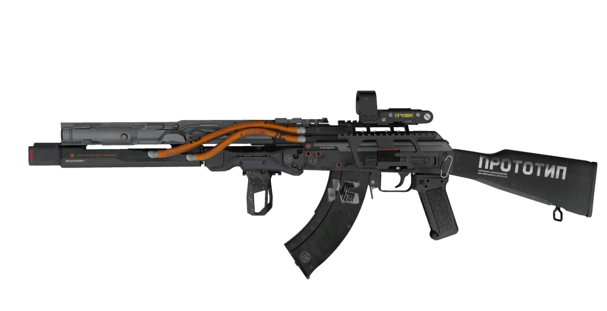
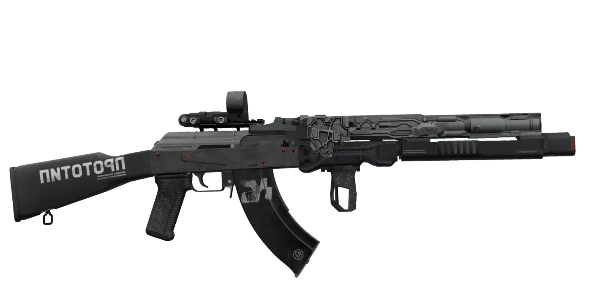
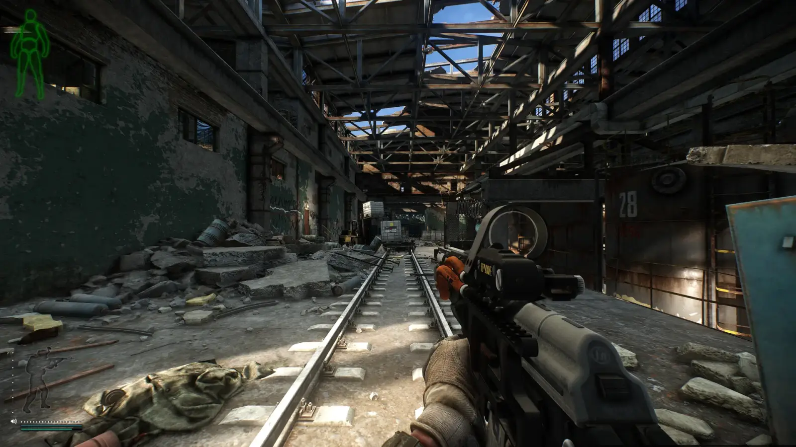
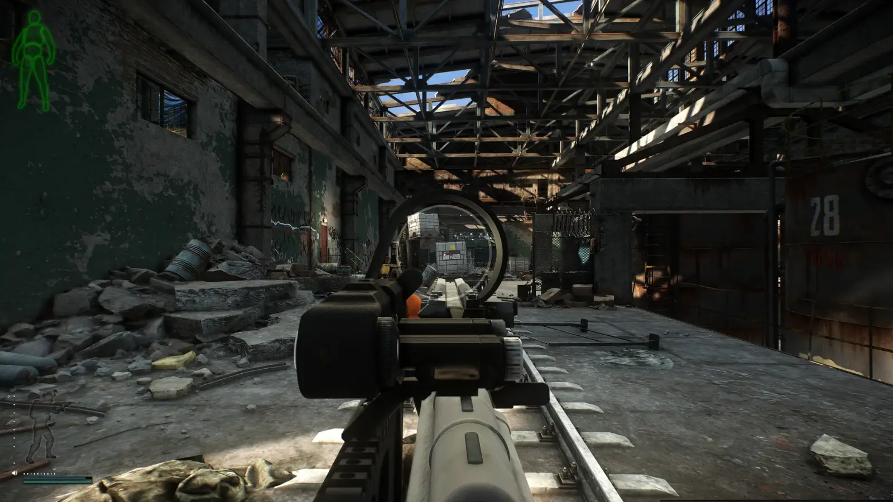
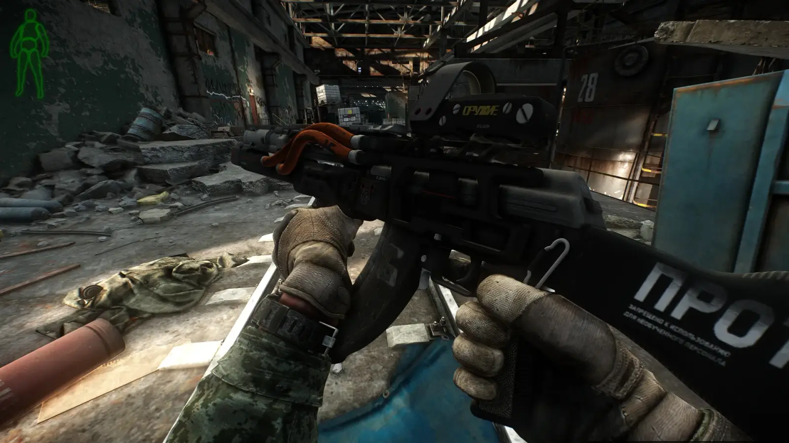
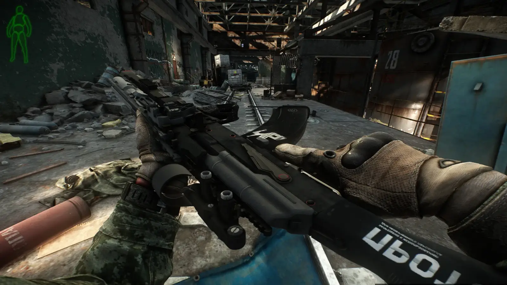
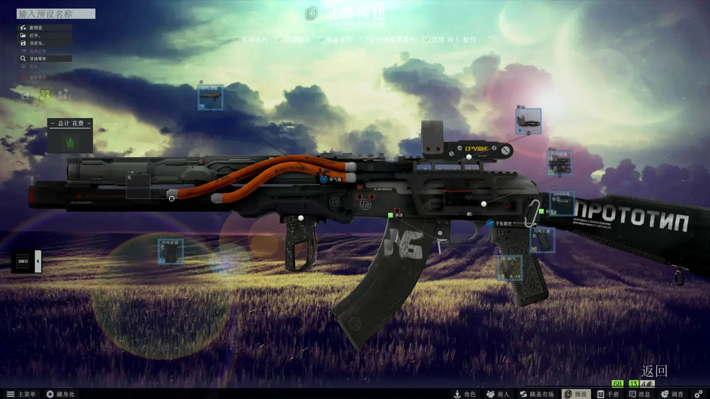

Mod
Resonant AK from COD:MW2019 - ReUpload
- Downloads
- 3,861
- Favourites
- 5
- Mod lists
- 7
This mod displayed a profile-binding notice on Forge.
Original mod by MDZZWOC. I’ve only updated it to be compatible with version 3.11 and re-uploaded it.
Special thanks to GrooveypenguinX for providing the WTT-BundleMaster tool — without it, I wouldn’t have been able to update this to 3.11 without knowing anything about Unity!
To install: Extract to your SPT folder.
Original mod page: Resonant AK from COD:MW2019
Original author: MDZZWOC
Preview image:







Below is the original mod description:
The very sci-fi looking AK blueprint from Call of Duty: Modern Warfare (2019)
Description:
Introducing the “Resonant” legendary AK-47 blueprint to tarkov.
These CoD things look weird, but still cool.
Content:
- The “Resonant” heavy barrel for AK rifles
- The “Resonant” foregrip
- The “Resonant” dovetail rail
- The “Resonant” 762*39&.366TKM extended magazine
- The “Resonant” pistol grip for AK rifles
- The “Resonant” stock (Two versions for both traditional and modernized AK rifles)
- The “Resonant” OKP-7 reflex sight
- The advanced “Resonant” AK rifle container
- All items can be bought from PEACEKEEPER LL4 and FLEA MARKET
Credits:
- Infinity Ward: For the mesh and texture
- GrooveypenguinX: For the WTT code framework this mod is using
- The whole WTT community: Without their help and encourage, I wouldn’t finish the mod this quick